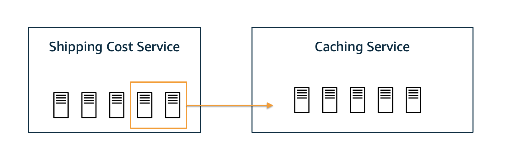

Root cause analysis (RCA) of latencies in a microservice architecture
In this case study, we identify the root causes of “unexpected” observed latencies in cloud services that empower an online shop. We focus on the process of placing an order, which involves different services to make sure that the placed order is valid, the customer is authenticated, the shipping costs are calculated correctly, and the shipping process is initiated accordingly. The dependencies of the services is shown in the graph below.
[ ]:
from IPython.display import Image
Image('microservice-architecture-dependencies.png', width=500)
This kind of dependency graph could be obtained from services like Amazon X-Ray or defined manually based on the trace structure of requests.
We assume that the dependency graph above is correct and that we are able to measure the latency (in seconds) of each node for an order request. In case of Website, the latency would represent the time until a confirmation of the order is shown. For simplicity, let us assume that the services are synchronized, i.e., a service has to wait for downstream services in order to proceed. Further, we assume that two nodes are not impacted by unobserved factors (hidden confounders) at the same time
(i.e., causal sufficiency). Seeing that, for instance, network traffic affects multiple services, this assumption might be typically violated in a real-world scenario. However, weak confounders can be neglected, while stronger ones (like network traffic) could falsely render multiple nodes as root causes. Generally, we can only identify causes that are part of the data.
Under these assumptions, the observed latency of a node is defined by the latency of the node itself (intrinsic latency), and the sum over all latencies of direct child nodes. This could also include calling a child node multiple times.
Let us load data with observed latencies of each node.
[ ]:
import pandas as pd
normal_data = pd.read_csv("rca_microservice_architecture_latencies.csv")
normal_data.head()
Let us also take a look at the pair-wise scatter plots and histograms of the variables.
[ ]:
axes = pd.plotting.scatter_matrix(normal_data, figsize=(10, 10), c='#ff0d57', alpha=0.2, hist_kwds={'color':['#1E88E5']});
for ax in axes.flatten():
ax.xaxis.label.set_rotation(90)
ax.yaxis.label.set_rotation(0)
ax.yaxis.label.set_ha('right')
In the matrix above, the plots on the diagonal line are histograms of variables, whereas those outside of the diagonal are scatter plots of pair of variables. The histograms of services without a dependency, namely Customer DB, Product DB, Order DB and Shipping Cost Service, have shapes similar to one half of a Gaussian distribution. The scatter plots of various pairs of variables (e.g., API and www, www and Website, Order Service and Order DB) show linear
relations. We shall use this information shortly to assign generative causal models to nodes in the causal graph.
Setting up the causal graph
If we look at the Website node, it becomes apparent that the latency we experience there depends on the latencies of all downstream nodes. In particular, if one of the downstream nodes takes a long time, Website will also take a long time to show an update. Seeing this, the causal graph of the latencies can be built by inverting the arrows of the service graph.
[ ]:
import networkx as nx
from dowhy import gcm
causal_graph = nx.DiGraph([('www', 'Website'),
('Auth Service', 'www'),
('API', 'www'),
('Customer DB', 'Auth Service'),
('Customer DB', 'API'),
('Product Service', 'API'),
('Auth Service', 'API'),
('Order Service', 'API'),
('Shipping Cost Service', 'Product Service'),
('Caching Service', 'Product Service'),
('Product DB', 'Caching Service'),
('Customer DB', 'Product Service'),
('Order DB', 'Order Service')])
Here, we are interested in the causal relationships between latencies of services rather than the order of calling the services.
We will use the information from the pair-wise scatter plots and histograms to manually assign causal models. In particular, we assign half-Normal distributions to the root nodes (i.e., Customer DB, Product DB, Order DB and Shipping Cost Service). For non-root nodes, we assign linear additive noise models (which scatter plots of many parent-child pairs indicate) with empirical distribution of noise terms.
[ ]:
from scipy.stats import halfnorm
causal_model = gcm.StructuralCausalModel(causal_graph)
for node in causal_graph.nodes:
if len(list(causal_graph.predecessors(node))) > 0:
causal_model.set_causal_mechanism(node, gcm.AdditiveNoiseModel(gcm.ml.create_linear_regressor()))
else:
causal_model.set_causal_mechanism(node, gcm.ScipyDistribution(halfnorm))
Alternatively, we can also automate this if we don’t have prior knowledge or are not familiar with the statistical implications:
gcm.auto.assign_causal_mechanisms(causal_model, normal_data)
Scenario 1: Observing a single outlier
Suppose we get an alert from our system where a customer experienced an unusually high latency when an order is placed. Our task is now to investigate this issue and to find the root cause of this behaviour.
We first load the latency to the corresponding alert.
[ ]:
outlier_data = pd.read_csv("rca_microservice_architecture_anomaly.csv")
outlier_data
We are interested in the increased latency of Website which the customer directly experienced.
[ ]:
outlier_data.iloc[0]['Website']-normal_data['Website'].mean()
For this customer, Website was roughly 2 seconds slower than for other customers on average. Why?
Attributing an outlier latency at a target service to other services
To answer why Website was slower for this customer, we attribute the outlier latency at Website to upstream services in the causal graph. We refer the reader to Janzing et al., 2019 for scientific details behind this API. We will calculate a 95% bootstrapped confidence interval of our attributions. In particular, we learn the causal models from a random subset of normal data and attribute the target outlier score using those models, repeating the
process 10 times. This way, the confidence intervals we report account for (a) the uncertainty of our causal models as well as (b) the uncertainty in the attributions due to the variance in the samples drawn from those causal models.
[ ]:
gcm.config.disable_progress_bars() # to disable print statements when computing Shapley values
median_attribs, uncertainty_attribs = gcm.confidence_intervals(
gcm.bootstrap_training_and_sampling(gcm.attribute_anomalies,
causal_model,
normal_data,
target_node='Website',
anomaly_samples=outlier_data),
num_bootstrap_resamples=10)
By default, a quantile-based anomaly score is used that estimates the negative log-probability of a sample being normal. This is, the higher the probabilty of an outlier, the larger the score. The library offers different kinds of outlier scoring functions, such as the z-score, where the mean is the expected value based on the causal model.
Let us visualize the attributions along with their uncertainty in a bar plot.
[ ]:
import matplotlib.pyplot as plt
import numpy as np
def bar_plot_with_uncertainty(median_attribs, uncertainty_attribs, ylabel='Attribution Score', figsize=(8, 3), bwidth=0.8, xticks=None, xticks_rotation=90):
fig, ax = plt.subplots(figsize=figsize)
yerr_plus = [uncertainty_attribs[node][1] - median_attribs[node] for node in median_attribs.keys()]
yerr_minus = [median_attribs[node] - uncertainty_attribs[node][0] for node in median_attribs.keys()]
plt.bar(median_attribs.keys(), median_attribs.values(), yerr=np.array([yerr_minus, yerr_plus]), ecolor='#1E88E5', color='#ff0d57', width=bwidth)
plt.xticks(rotation=xticks_rotation)
plt.ylabel(ylabel)
ax.spines['right'].set_visible(False)
ax.spines['top'].set_visible(False)
if xticks:
plt.xticks(list(median_attribs.keys()), xticks)
plt.show()
bar_plot_with_uncertainty(median_attribs, uncertainty_attribs)
The attributions indicate that Caching Service is the main driver of high latency in Website which is expected as we perturb the causal mechanism of Caching Service to generate an outlier latency in Website (see Appendix below). Attributions to Customer DB and Product Service can be explained by misspecification of causal models. First, some of the parent-child relationships in the causal graph are non-linear (by looking at the scatter matrix). Second, the parent
child-relationship between Caching Service and Product DB seems to indicate two mechanisms. This could be due to an unobserved binary variable (e.g., Cache hit/miss) that has a multiplicative effect on Caching Service. An additive noise cannot capture the multiplicative effect of this unobserved variable.
Scenario 2: Observing permanent degradation of latencies
In the previous scenario, we attributed a single outlier latency in Website to services that are nodes in the causal graph, which is useful for anecdotal deep dives. Next, we consider a scenario where we observe a permanent degradation of latencies and we want to understand its drivers. In particular, we attribute the change in the average latency of Website to upstream nodes.
Suppose we get additional 1000 requests with higher latencies as follows.
[ ]:
outlier_data = pd.read_csv("rca_microservice_architecture_anomaly_1000.csv")
outlier_data.head()
We are interested in the increased latency of Website on average for 1000 requests which the customers directly experienced.
[ ]:
outlier_data['Website'].mean() - normal_data['Website'].mean()
The Website is slower on average (by almost 2 seconds) than usual. Why?
Attributing permanent degradation of latencies at a target service to other services
To answer why Website is slower for those 1000 requests compared to before, we attribute the change in the average latency of Website to services upstream in the causal graph. We refer the reader to Budhathoki et al., 2021 for scientific details behind this API. As in the previous scenario, we will calculate a 95% bootstrapped confidence interval of our attributions and visualize
them in a bar plot.
[ ]:
median_attribs, uncertainty_attribs = gcm.confidence_intervals(
lambda : gcm.distribution_change(causal_model,
normal_data.sample(frac=0.6),
outlier_data.sample(frac=0.6),
'Website',
difference_estimation_func=lambda x, y: np.mean(y) - np.mean(x)),
num_bootstrap_resamples = 10)
bar_plot_with_uncertainty(median_attribs, uncertainty_attribs)
We observe that Caching Service is the root cause that slowed down Website. In particular, the method we used tells us that the change in the causal mechanism (i.e., the input-output behaviour) of Caching Service (e.g., Caching algorithm) slowed down Website. This is also expected as the outlier latencies were generated by changing the causal mechanism of Caching Service (see Appendix below).
Scenario 3: Simulating the intervention of shifting resources
Next, let us imagine a scenario where permanent degradation has happened as in scenario 2 and we’ve successfully identified Caching Service as the root cause. Furthermore, we figured out that a recent deployment of the Caching Service contained a bug that is causing the overloaded hosts. A proper fix must be deployed, or the previous deployment must be rolled back. But, in the meantime, could we mitigate the situation by shifting over some resources from Shipping Service to
Caching Service? And would that help? Before doing it in reality, let us simulate it first and see whether it improves the situation.

Let’s perform an intervention where we say we can reduce the average time of Caching Service by 1s. But at the same time we buy this speed-up by an average slow-down of 2s in Shipping Cost Service.
[ ]:
median_mean_latencies, uncertainty_mean_latencies = gcm.confidence_intervals(
lambda : gcm.bootstrap_training_and_sampling(gcm.interventional_samples,
causal_model,
outlier_data,
interventions = {
"Caching Service": lambda x: x-1,
"Shipping Cost Service": lambda x: x+2
},
observed_data=outlier_data)().mean().to_dict(),
num_bootstrap_resamples=10)
Has the situation improved? Let’s visualize the results.
[ ]:
avg_website_latency_before = outlier_data.mean().to_dict()['Website']
bar_plot_with_uncertainty(dict(before=avg_website_latency_before, after=median_mean_latencies['Website']),
dict(before=np.array([avg_website_latency_before, avg_website_latency_before]), after=uncertainty_mean_latencies['Website']),
ylabel='Avg. Website Latency',
figsize=(3, 2),
bwidth=0.4,
xticks=['Before', 'After'],
xticks_rotation=45)
Indeed, we do get an improvement by about 1s. We’re not back at normal operation, but we’ve mitigated part of the problem. From here, maybe we can wait until a proper fix is deployed.
Appendix: Data generation process
The scenarios above work on synthetic data. The normal data was generated using the following functions:
[ ]:
from scipy.stats import truncexpon, halfnorm
def create_observed_latency_data(unobserved_intrinsic_latencies):
observed_latencies = {}
observed_latencies['Product DB'] = unobserved_intrinsic_latencies['Product DB']
observed_latencies['Customer DB'] = unobserved_intrinsic_latencies['Customer DB']
observed_latencies['Order DB'] = unobserved_intrinsic_latencies['Order DB']
observed_latencies['Shipping Cost Service'] = unobserved_intrinsic_latencies['Shipping Cost Service']
observed_latencies['Caching Service'] = np.random.choice([0, 1], size=(len(observed_latencies['Product DB']),),
p=[.5, .5]) * \
observed_latencies['Product DB'] \
+ unobserved_intrinsic_latencies['Caching Service']
observed_latencies['Product Service'] = np.maximum(np.maximum(observed_latencies['Shipping Cost Service'],
observed_latencies['Caching Service']),
observed_latencies['Customer DB']) \
+ unobserved_intrinsic_latencies['Product Service']
observed_latencies['Auth Service'] = observed_latencies['Customer DB'] \
+ unobserved_intrinsic_latencies['Auth Service']
observed_latencies['Order Service'] = observed_latencies['Order DB'] \
+ unobserved_intrinsic_latencies['Order Service']
observed_latencies['API'] = observed_latencies['Product Service'] \
+ observed_latencies['Customer DB'] \
+ observed_latencies['Auth Service'] \
+ observed_latencies['Order Service'] \
+ unobserved_intrinsic_latencies['API']
observed_latencies['www'] = observed_latencies['API'] \
+ observed_latencies['Auth Service'] \
+ unobserved_intrinsic_latencies['www']
observed_latencies['Website'] = observed_latencies['www'] \
+ unobserved_intrinsic_latencies['Website']
return pd.DataFrame(observed_latencies)
def unobserved_intrinsic_latencies_normal(num_samples):
return {
'Website': truncexpon.rvs(size=num_samples, b=3, scale=0.2),
'www': truncexpon.rvs(size=num_samples, b=2, scale=0.2),
'API': halfnorm.rvs(size=num_samples, loc=0.5, scale=0.2),
'Auth Service': halfnorm.rvs(size=num_samples, loc=0.1, scale=0.2),
'Product Service': halfnorm.rvs(size=num_samples, loc=0.1, scale=0.2),
'Order Service': halfnorm.rvs(size=num_samples, loc=0.5, scale=0.2),
'Shipping Cost Service': halfnorm.rvs(size=num_samples, loc=0.1, scale=0.2),
'Caching Service': halfnorm.rvs(size=num_samples, loc=0.1, scale=0.1),
'Order DB': truncexpon.rvs(size=num_samples, b=5, scale=0.2),
'Customer DB': truncexpon.rvs(size=num_samples, b=6, scale=0.2),
'Product DB': truncexpon.rvs(size=num_samples, b=10, scale=0.2)
}
normal_data = create_observed_latency_data(unobserved_intrinsic_latencies_normal(10000))
This simulates the latency relationships under the assumption of having synchronized services and that there are no hidden aspects that impact two nodes at the same time. Furthermore, we assume that the Caching Service has to call through to the Product DB only in 50% of the cases (i.e., we have a 50% cache miss rate). Also, we assume that the Product Service can make calls in parallel to its downstream services Shipping Cost Service, Caching Service, and Customer DB and join the threads when all three service have returned.
We use truncated exponential and half-normal distributions, since their shapes are similar to distributions observed in real services.
The anomalous data is generated in the following way:
[ ]:
def unobserved_intrinsic_latencies_anomalous(num_samples):
return {
'Website': truncexpon.rvs(size=num_samples, b=3, scale=0.2),
'www': truncexpon.rvs(size=num_samples, b=2, scale=0.2),
'API': halfnorm.rvs(size=num_samples, loc=0.5, scale=0.2),
'Auth Service': halfnorm.rvs(size=num_samples, loc=0.1, scale=0.2),
'Product Service': halfnorm.rvs(size=num_samples, loc=0.1, scale=0.2),
'Order Service': halfnorm.rvs(size=num_samples, loc=0.5, scale=0.2),
'Shipping Cost Service': halfnorm.rvs(size=num_samples, loc=0.1, scale=0.2),
'Caching Service': 2 + halfnorm.rvs(size=num_samples, loc=0.1, scale=0.1),
'Order DB': truncexpon.rvs(size=num_samples, b=5, scale=0.2),
'Customer DB': truncexpon.rvs(size=num_samples, b=6, scale=0.2),
'Product DB': truncexpon.rvs(size=num_samples, b=10, scale=0.2)
}
outlier_data = create_observed_latency_data(unobserved_intrinsic_latencies_anomalous(1000))
Here, we significantly increased the average time of the Caching Service by two seconds, which coincides with our results from the RCA. Note that a high latency in Caching Service would lead to a constantly higher latency in upstream services. In particular, customers experience a higher latency than usual.